Yewon is a computational designer.
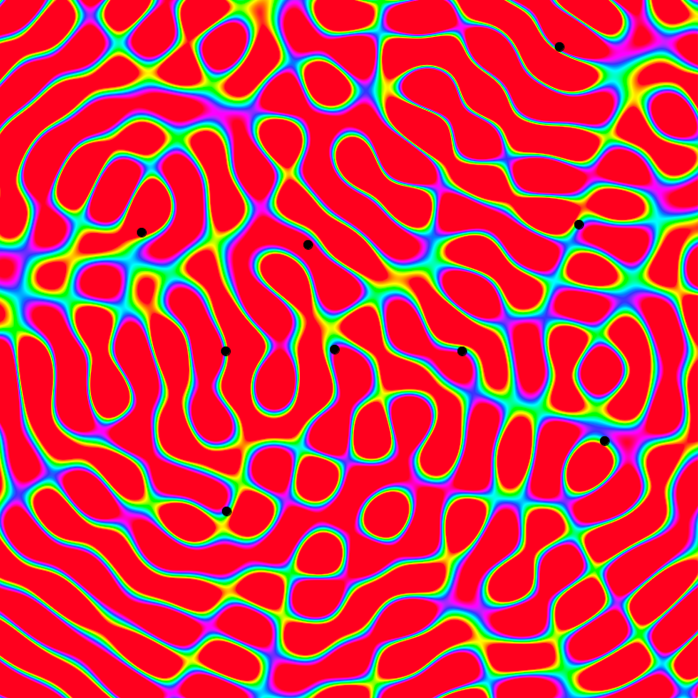
Wave Interference
Sep 23, 2021
Project Overview
This project bridges wave interference physics with interactive visualization through Processing. By implementing fundamental wave equations and superposition principles, we create a real-time simulation that helps understand how waves interact in two-dimensional space.
Physical Wave Theory and Implementation
Basic Wave Physics
In physics, a wave is a disturbance that travels through space and matter. The basic mathematical representation of a wave is:
A: Amplitude (height of wave)
k: Wave number (2π/wavelength)
ω: Angular frequency (2πf)
x: Position in space
t: Time
k: Wave number (2π/wavelength)
ω: Angular frequency (2πf)
x: Position in space
t: Time
In my code, I implement this wave equation as:
-> amplitude directly corresponds to A
-> distance/wavelength represents kx (spatial component)
-> time * frequency represents ωt (temporal component)
-> distance/wavelength represents kx (spatial component)
-> time * frequency represents ωt (temporal component)
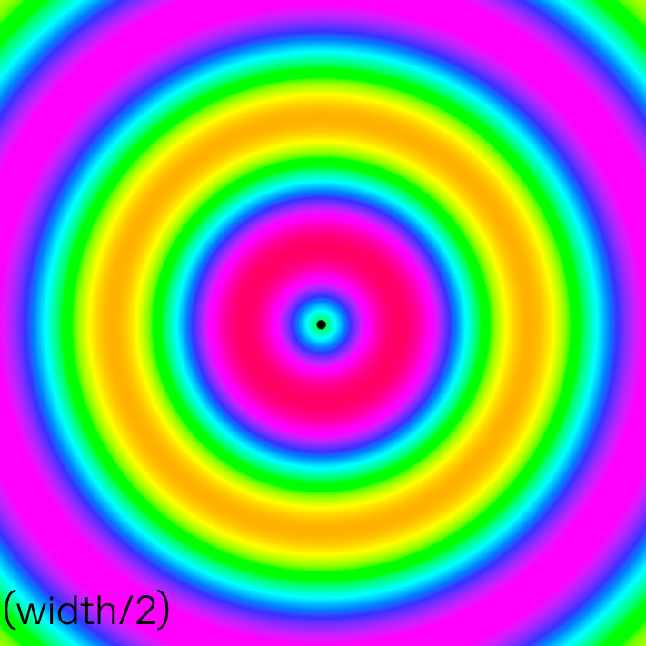
Standing Wave (정상파)
Wave Interference
In physics, when two or more waves overlap, they exhibit interference patterns. The principle of superposition states that the resultant displacement at any point is the sum of the displacements of different waves at that point.
When multiple waves meet in physical space, they combine through the principle of superposition. In my simulation, I implement this fundamental physics concept through a simple yet line of code: totalWave += wave. For each pixel in my simulation, I add up the contributions from every wave source, directly mirroring how waves combine in nature. If a pixel experiences a positive displacement from one wave and a negative displacement from another, these will naturally add to create the resulting interference pattern - whether constructive (waves reinforcing each other) or destructive (waves canceling each other out).
The circular nature of my waves comes from how I calculate the distance between each wave source and every point in my simulation space. Using Processing's dist(x, y, source.x, source.y) function, I compute the radial distance from each source point to each pixel. This creates circular wavefronts because the waves propagate equally in all directions from their source, just like ripples in a pond. Each point at the same distance from the source experiences the same phase of the wave, creating those characteristic circular patterns.
In real physical systems, waves tend to lose energy as they travel through a medium. I model this natural phenomenon using an exponential decay function: exp(-distance * damping/1000). This exponential attenuation reflects how waves behave in real systems, where energy loss often follows an exponential law. As waves travel further from their source, they gradually lose amplitude, with the damping parameter controlling how quickly this decay occurs. The division by 1000 helps scale the damping effect to work well with my simulation's dimensions. Higher damping values cause waves to die out more quickly with distance, while lower values allow them to propagate further, giving me control over the wave behavior to match different physical scenarios.
The circular nature of my waves comes from how I calculate the distance between each wave source and every point in my simulation space. Using Processing's dist(x, y, source.x, source.y) function, I compute the radial distance from each source point to each pixel. This creates circular wavefronts because the waves propagate equally in all directions from their source, just like ripples in a pond. Each point at the same distance from the source experiences the same phase of the wave, creating those characteristic circular patterns.
In real physical systems, waves tend to lose energy as they travel through a medium. I model this natural phenomenon using an exponential decay function: exp(-distance * damping/1000). This exponential attenuation reflects how waves behave in real systems, where energy loss often follows an exponential law. As waves travel further from their source, they gradually lose amplitude, with the damping parameter controlling how quickly this decay occurs. The division by 1000 helps scale the damping effect to work well with my simulation's dimensions. Higher damping values cause waves to die out more quickly with distance, while lower values allow them to propagate further, giving me control over the wave behavior to match different physical scenarios.
Visualization Through Color Mapping
The visualization of wave interference patterns is crucial for understanding how waves interact, so I carefully chose HSB color mapping for its intuitive representation. Here's the key implementation:
In this code, I map the total wave displacement (totalWave) to a color hue value. The map() function converts the wave amplitude, which ranges from -amplitude to +amplitude, to a hue value between 100 and 300 degrees in the HSB color wheel. I specifically chose this range because it creates a beautiful and intuitive color transition:
-> When totalWave is at its maximum positive amplitude, the hue value becomes 300 (purple/magenta), representing wave peaks
-> When totalWave is at its maximum negative amplitude, the hue value becomes 100 (green/blue), representing wave troughs
-> When totalWave is near zero, the hue value is around 200 (cyan), representing neutral areas
I set both saturation and brightness to 100 to ensure vivid colors that clearly show the wave patterns. This creates a striking visualization where:
-> Areas of constructive interference (where waves reinforce each other) appear in vibrant purple/magenta
-> Areas of destructive interference (where waves cancel each other) appear in deep blue/green
-> Areas with minimal wave activity appear in cyan
This color mapping makes it immediately apparent where waves are interfering constructively or destructively, making the abstract concept of wave interference visually tangible. The smooth gradient between colors also helps visualize the continuous nature of wave propagation, showing how wave amplitude changes gradually across space.
-> When totalWave is at its maximum positive amplitude, the hue value becomes 300 (purple/magenta), representing wave peaks
-> When totalWave is at its maximum negative amplitude, the hue value becomes 100 (green/blue), representing wave troughs
-> When totalWave is near zero, the hue value is around 200 (cyan), representing neutral areas
I set both saturation and brightness to 100 to ensure vivid colors that clearly show the wave patterns. This creates a striking visualization where:
-> Areas of constructive interference (where waves reinforce each other) appear in vibrant purple/magenta
-> Areas of destructive interference (where waves cancel each other) appear in deep blue/green
-> Areas with minimal wave activity appear in cyan
This color mapping makes it immediately apparent where waves are interfering constructively or destructively, making the abstract concept of wave interference visually tangible. The smooth gradient between colors also helps visualize the continuous nature of wave propagation, showing how wave amplitude changes gradually across space.
 Four Stainding Wave Interference
Four Stainding Wave Interference
Wave Parameter Experiments and Analysis
In my wave simulation, I conducted experiments by varying four key parameters while keeping others constant. For each parameter, I analyzed three different values: low, medium (default), and high. The default values were:
float frequency = 0.1;
float wavelength = 50;
float amplitude = 100;
float damping = 0.95;
float frequency = 0.1;
float wavelength = 50;
float amplitude = 100;
float damping = 0.95;
Wavelength(파장)
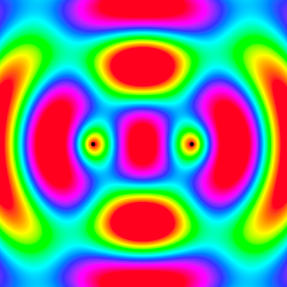
(0.1, 50.0, 100.0, 0.95)
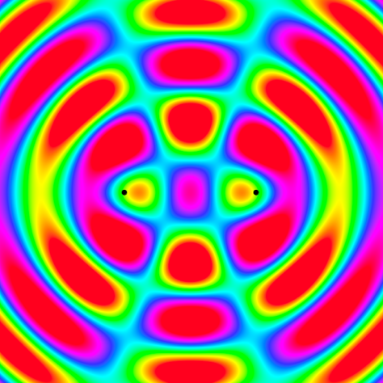
(0.1, 31.19722, 100.0, 0.95)
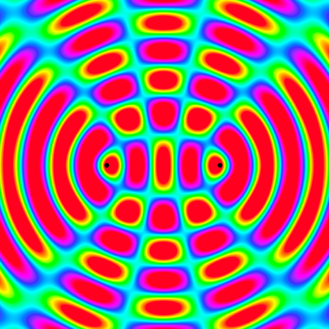
(0.1, 19.371023, 100.0, 0.95)
Shorter wavelengths create more numerous, closely packed interference nodes. Longer wavelengths result in fewer, more spread out interference patterns. The distance between constructive interference points scales directly with wavelength.
Amplitude(진폭)
(0.1, 50.0, 100.0, 0.95)
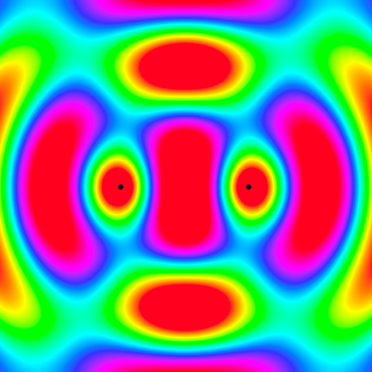
(0.1, 50.0, 40526.57, 0.95)
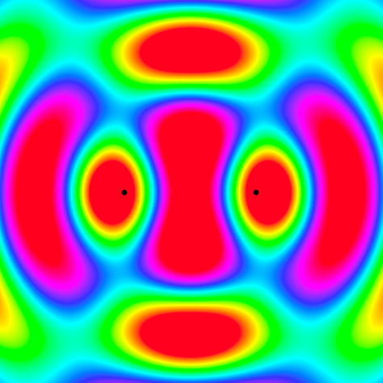
(0.1, 50.0, 4757454.5, 0.95)
Low amplitude: Narrower range of color variation, mostly middle tones.
High amplitude: Fuller use of the color spectrum with more extreme values
Color contrast becomes more pronounced with higher amplitude
High amplitude: Fuller use of the color spectrum with more extreme values
Color contrast becomes more pronounced with higher amplitude
Damping(감쇠)
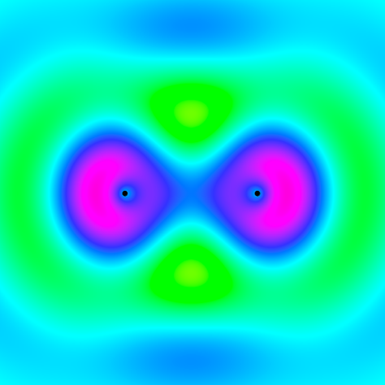
(0.1, 50.0, 100.0, 6.391127)
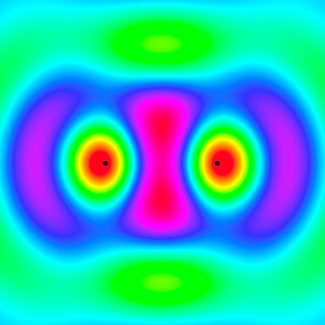
(0.1, 50.0, 100.0, 2.7104616)
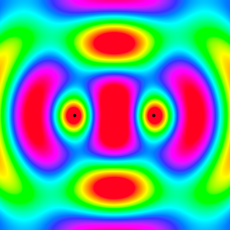
(0.1, 50.0, 100.0, 1.6829833)
Position (위치)
Single Wave
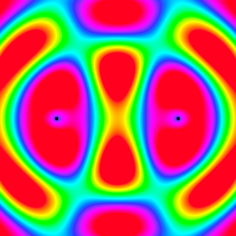
(width/4, 3*width/4)
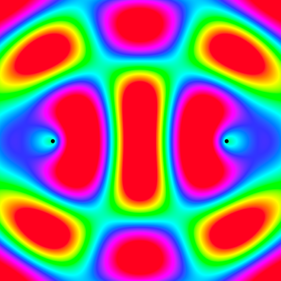
(width/5, 4*width/5)